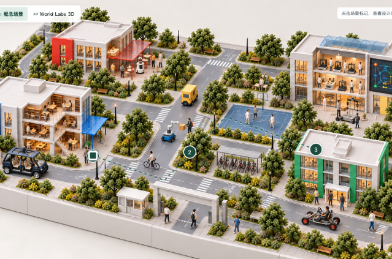

装配预览 · 尚未加载校园地图Spark + Three.js

原始校园参考图 · 2D · 设计依据正在启动三维工作台…
Y ↑
X → / −Z 前向
拖动旋转 · 右键平移 · 滚轮缩放 · 点击选择车辆
1 格 = 1 m · 地图未标定
SOPHI MULTI-VEHICLE LAB
车队运行 正在准备车型
五款官方车型 + 一款参考图试验车，按米制接入。选择对象后，下方控制只作用于该车；其他车辆继续运行。当前为路径运动演示，已加入跟车减速、交叉路线让行和车体碰撞拦截；尚未接入物理动力学。
所选车辆路径 运动演示
校园主路、赛车环道保持平整。综合测试路包含崎岖、砂石、12 cm 浅水和搓衣板路；车辆按前后轴高度调整姿态，此处为路径运动演示。
为所选车辆分配路线